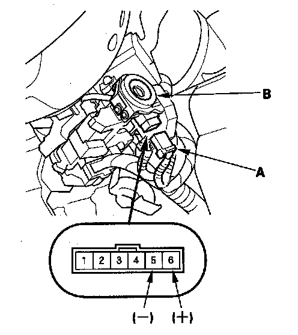

Ignition Key Light Test
Ignition Key Light Test1. Remove the steering column upper and lower covers.

2. Disconnect the 6P connector (A).
3. The LED (B) should come on when power is connected to the No. 6 terminal and ground is connected to No. 5 terminal.
4. If the LED does not come on, replace the ignition switch.